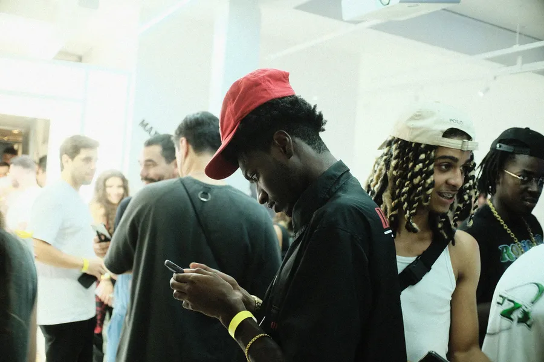

Brand experience · Pinheiros, São Paulo
live ideas anywhere
Somos uma agência de brand experience focada em conteúdo e live marketing. Planejamos, desenhamos e executamos iniciativas que conectam marcas e pessoas por meio de experiências que fazem sentido.
- live ideas anywhere
- live ideas anywhere
- live ideas anywhere
- live ideas anywhere
Duas frentes, um oito
Metade live, metade conteúdo.
-
01
Live marketing
Ações ao vivo, no meio do público: a marca deixa de ser anúncio e vira experiência para quem está lá.
-
02
Conteúdo
Conteúdo pensado junto com a experiência, para a ideia continuar na conversa depois que a ação acaba.
Como fazemos
Do plano ao palco.
-
01
Planejamos
Começamos pelo público que a marca quer alcançar.
-
02
Desenhamos
Desenhamos a experiência e o conteúdo que levam a marca até ele.
-
03
Executamos
Colocamos a ideia em pé, ao vivo, onde ela precisa estar.
Portfólio
Trabalhos que a gente conta.
-
Case de exemplo — substituir pelo de vocês
Marca de exemplo
Live marketingDescreva em duas linhas a ação, o público e o que aconteceu.
-
Case de exemplo — substituir pelo de vocês
Marca de exemplo
ConteúdoDescreva em duas linhas o formato, onde rodou e o que gerou.
-
Case de exemplo — substituir pelo de vocês
Marca de exemplo
Live + conteúdoDescreva em duas linhas como a ação ao vivo virou conteúdo.
11,3 mil
pessoas seguem a oito no Instagram @oito.ag · @oito.content
Qual é a próxima ideia ao vivo?
Conta para a oito o que a sua marca quer viver. A conversa começa no Instagram.
Falar no Instagram · @oito.ag